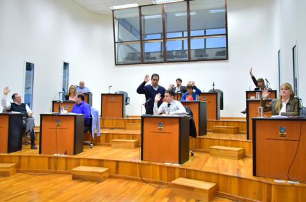

Real Chubut - Agencia de Noticias


CONCEJALES REPUDIARON EL “DESPLANTE” DEL MINISTRO DIETRICH

Desde el FpV y ChST criticaron la actitud del funcionario nacional durante su visita a Comodoro y la suspensión de la reunión programada con los ediles para el próximo martes hasta después de las elecciones. En la sesión también se prorrogó la Emergencia por la catástrofe climática. Durante la hora de preferencia, una vez más la situación financiera de la provincia, con la repercusión de un nuevo paro de transportes en la ciudad, generó posiciones de alarma
Durante la primera sesión ordinaria de octubre, la visita del ministro de Transporte de la Nación, Guillermo Dietrich, fue uno de los platos fuertes de la Hora de Preferencia, más aún cuando en el medio de las expresiones, el concejal Ricardo Gaitán comunicó un mensaje del senador Alfredo Luenzo, quien le advertía que la reunión programada con el ministro para el martes que viene, en virtud de gestionar las obras postergadas para la ciudad, se suspendía hasta después de las elecciones.
Además de generar más críticas, la noticia profundizó la indignación de los ediles del FpV y Chubut Somos Todos, que se habían pronunciado duramente respecto a la visita del funcionario nacional y su equipo por la obra del puerto, en la que estableció una especie de “cerrojo” con los referentes locales.
Justamente Gaitán advirtió que “es la segunda vez que viene a Comodoro y le cierra las puertas a los concejales y funcionarios de la ciudad. Fueron pocos los que tuvieron la posibilidad de ingresar. Es vergonzoso lo que hizo el ministro.Hay funcionarios nacionales que vienen a Comodoro y tienen agenda exclusiva con algunos”.
Por su parte, Sirley García se manifestó con dureza: “Lo de Dietrich fue un acto de campaña, una falta de respeto con portones cerrados. Y cuando hablamos de las políticas del gobierno nacional es porque su postura va en contra de las necesidades de la provincia, donde estamos sufriendo despidos todos los días”.
El concejal del FpV, Guillermo Almirón, recordó que “Dietrich tuvo la misma actitud cuando vino a anunciar el tan mentado plan Patagonia que no sabemos qué es. Y recordó que la reunión con el ministro era por las obras necesarias: “estamos pidiendo que se comprometan con esas obras porque se comprometieron con 2.500 millones para bicisendas en Buenos Aires, y nosotros estamos pidiendo que se haga una obra para garantizar el agua en toda la cuenca. El corredor bioceánico tiene una lógica, no es un capricho. Necesitamos un trampolín de desarrollo”.
Justamente las obras necesarias para la ciudad fue una vez más puntapié de debate frente al rol del gobierno nacional. El concejal Nicolás Caridi, criticó la falta de obras para la zona en el Presupuesto Nacional 2018: “Estamos convencidos que se trata de un presupuesto que tiende a beneficiar al centro del país a costa del resto de las provincias. Hay un sin número de obras que no han sido presupuestadas como el camino de circunvalación; la segunda etapa del aterrazamiento del cerro Chenque; la finalización del Estadio Centenario o los emisarios marinos para el tratamiento de las aguas residuales que van hacia el mar”. El edil reconoció que “existen obras en ejecución que destacamos, como el aeropuerto y el puerto, pero también se le han pedido obras complementarias como el corredor bioceánico, pero tampoco ha sido incluido”.
Sampaoli recordó que “la misma obra del puerto que vinieron a recorrer, sin un complemento vial y el camino de circunvalación tampoco podrá ser exitosa”. Incluso dio a conocer que “hay empresas que por las complejidades de la geografía del centro de Comodoro, están pensando en empezar a operar con el puerto de Madryn”.
En defensa del gobierno nacional, el presidente del bloque Cambiemos, José Gaspar eligió reconocer “la honestidad al gobierno nacional, que no va a prometer hacer lo que no va a hacer, como sí hacía el gobierno anterior. La doble trocha Comodoro-Caleta nunca se hizo; hay un convenio para la finalización del estadio centenario; la segunda etapa del aterrazamiento está comprometida en el presupuesto vigente. Yo prefiero que no nos vendan espejitos de colores”. En la misma línea, Pablo Martínez contrapuso que “en la gestión anterior no se inauguraba ninguna obra y ahora reclamamos cosas que antes no planteaban”.
Se prorrogó la Emergencia Climática
Con algunas modificaciones, se aprobó la prórroga la vigencia de la ordenanza 12.622/17 que establecía la Emergencia climática hasta el 31 de diciembre del 2017. Más allá de dar facultad al Ejecutivo Muncipal de contratar provisión de bienes, locaciones, obras, concesiones, permisos, y la realización de cualquier contrato que fuese necesario para superar la situación de emergencia, se establecen ciertos requisitos de presentación.
A su vez, quedó redactado que una vez que se apruebe el Presupuesto General 2018, operará una nueva prórroga hasta el 31 de marzo, de la Emergencia en lo económico, social, administrativo y financiero.
Parque de la Ciudad
Se aprobaron dos proyecto presentado por la concejal Norma Contreras, en relación al Parque de la Ciudad. En este sentido, se aprobó la transferencia del Estado Nacional a la Municipalidad de Comodoro Rivadavia, por el inmueble perteneciente a la ex Compañía de Comunicaciones N°9, lindante al chalet Huergo en km.3
Al resultar de dominio público municipal el terreno, en otro proyecto de ordenanza se establece que dicho inmueble solo podrá afectarse exclusivamente a la creación del Parque de la Ciudad, un anhelo reiterado de los vecinos del barrio General Mosconi.
El agua y el reclamo por las obras prioritarias
En la reunión del Bloque de Legisladores de la Cuenca del Río Sénguer, se votaron diversas mociones acordadas entre todos los concejales sin distinción partidaria en pos de encontrar soluciones ante los problemas de abastecimiento de agua.
Además del compromiso verbal del senador Alfredo Luenzo para gestionar a nivel nacinal, el concejal del FpV, Guillermo Almirón, elaboró un proyecto de Expresión de Deseos para que dichas mociones queden plasmadas por escrito, modalidad que se repetiría en cada uno de los cuerpos legislativos de las localidades de la Cuenca.
En primer lugar se solicita que se incluya en el Presupuesto Nacional 2018 la obra del azud regulador del lago Fontana, “solicitando principalmente a los senadores y diputados nacionales por Chubut que prioricen tal objetivo al momento de tratar en comisiones dicho presupuesto”.
Además, se solicita a la Legislatura y a ambas cámaras del Congreso Nacional que “analicen la posibilidad de declarar de Interés Público la obra del Azud del lago Fontana”; y al Ejecutivo Provincial que “gestione ante las empresas operadoras de Hidrocarburos que poseen capacidad de generación eléctrica instalada, pongan a disposición la correcta operación de los acueductos del lago Musters.
Durante la hora de preferencia, hubo expresiones de satisfacción respecto a la reunión del Bloque de Legisladores desarrollada el sábado pasado en el Concejo. “Como concejales asumimos nuestro protagonismos y conseguimos una serie de definiciones”, aseguró Contreras. Para Maximiliano Sampaoli, “se demostró que sin distinciones partidarias, en materia de necesidades de obra, todos tiramos para el mismo lado”.
La situación financiera de la Provincia y el paro de transporte
Desde lo institucional, me pareció una excelente reacción de parte del gobierno provincial, a diferencia del año y ocho meses anterior, de conceder una reunión con ejes temáticos con nos preocupan. Hasta el propio gobernador participó. Fuimos a plantear temas para empezar a tener respuestas, no solo una foto en Rawson”, valoró Almirón. Entre los puntos fuertes, el edil expresó que “logramos avances respecto al Servicio de Protección de Derechos, que no habíamos logrado en lo que va de la gestión que este conflicto se ponga en agenda. Hemos sido receptores de movilizaciones, de planteos, alrededor de la solución de este tema, con un fondo insuficiente que no se actualiza desde 2009 y por primera vez en un año y ocho meses lo toman en cuenta y no quedó perdido en las discusiones entre una jurisdicción y a otra”.
Por su parte, el concejal de ChST, valoró que “nos trajimos la respuesta del cambio de traza para la repotenciación del acueducto, por afuera de la localidad de Sarmiento, cuyo intendente impedía que la traza pase por allí. Posicionamos a la ciudad más importante de la provincia en un encuentro con el gobernador y parte de su gabinete. Trajimos la garantía que el TEG seguirá hasta fin de año y en palabras del gobernador “se va a reconducir a quienes lo necesitan”.
Sin embargo, justamente lo relacionado al transporte fue el punto más criticado por el resto. “Hoy tenemos otro paro de transporte. O sea el TEG continúa hasta fin de año, según dijeron, pero no hay capacidad de pago, como con tantos otros servicios. No hay expresión pública de ningún funcionario respecto al paro de transporte público en Comodoro. Mañana es viernes y si no se deposita, nos va a agarrar todo el fin de semana y el lunes sin transporte. Se paraliza la ciudad y vuelve a acomplejar el clima. Evidentemente no hay plata y vengo diciendo que la Provincia, si bien no es santa cruz, vamos camino a eso. No están pudiendo cumplir con los servicios básicos”, criticó duramente Almirón.
El presidente del bloque FpV, Mario Soto, advirtió que el atraso en el pago del subsidio del transporte “es algo que se viene repitiendo. Es muy difícil la situación porque habíamos planteado el sinceramiento de Provincia con este tema. Supuestamente iban a transferir fondos y no sucedió. Esto complica mucho a la ciudad porque el señor intendente tiene que poner la cara y muchas veces ha adelantado el subsidio del municipio para darle una solución parcial al tema, pero Comodoro no puede seguir siendo el resorte de lo que no aporta Nación”.
Gaspar también fue contundente: “lo más triste es que la crisis financiera de la Provincia va a repercutir en esta ciudad, porque la gente al primero que va a ir a reclamarle si no funciona el transporte es al municipio; si no funciona el TEG también. La provincia está muy endeudada y agrava el doble la situación que se nos viene. Cada día está más endeudada y cada día paga intereses más altos. Lo vamos a sufrir los municipios porque también está usando lo que debería coparticipar con los municipios”.
Su compañero de bancada, Pablo Martínez, también lamentó que “el saldo positivo de la reunión es solo institucional. La realidad es que no nos trajimos nada y hoy tenemos un nuevo paro de colectivos. Tampoco hubo respuestas de la segunda cuota de los 100 millones”.
PUBLICIDAD